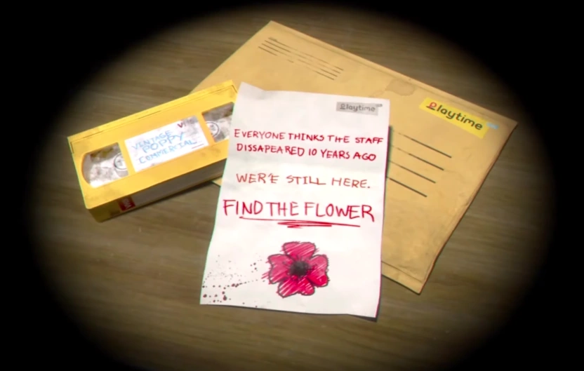

Chapter 1
- Um Abraço Apertado
O protagonista sem nome recebe um pacote contendo uma fita VHS, que exibe um comercial do primeiro mascote da Playtime Company a boneca de porcelana Poppy Playtime e um passeio pela fábrica principal e sede da Playtime, antes do comercial cortar abruptamente para uma imagem de um graffiti de uma papoula e uma carta dos funcionários desaparecidos da Playtime e ex-colegas de trabalho do protagonista sem nome, pedindo para que ele "encontre a flor".

Ele então visita seu ex-local de trabalho, sede e fábrica da Playtime para descobrir o que aconteceu com seus ex-colegas de trabalho. Depois de digitar o código correto para desbloquear uma porta de segurança, ele assiste a uma fita VHS que o apresenta ao GrabPack. Depois de desbloquear a porta do saguão com o GrabPack, ele é introduzido a uma versão estátua de Huggy Wuggy, que está em exibição no centro da sala.
Ao tentar desbloquear uma porta no saguão, a energia corta repentinamente, que o força a restaurá-la na sala de energia. Depois de fazer isso e voltar para o saguão, o protagonista sem nome descobre que a versão estátua de Huggy desapareceu da sala.